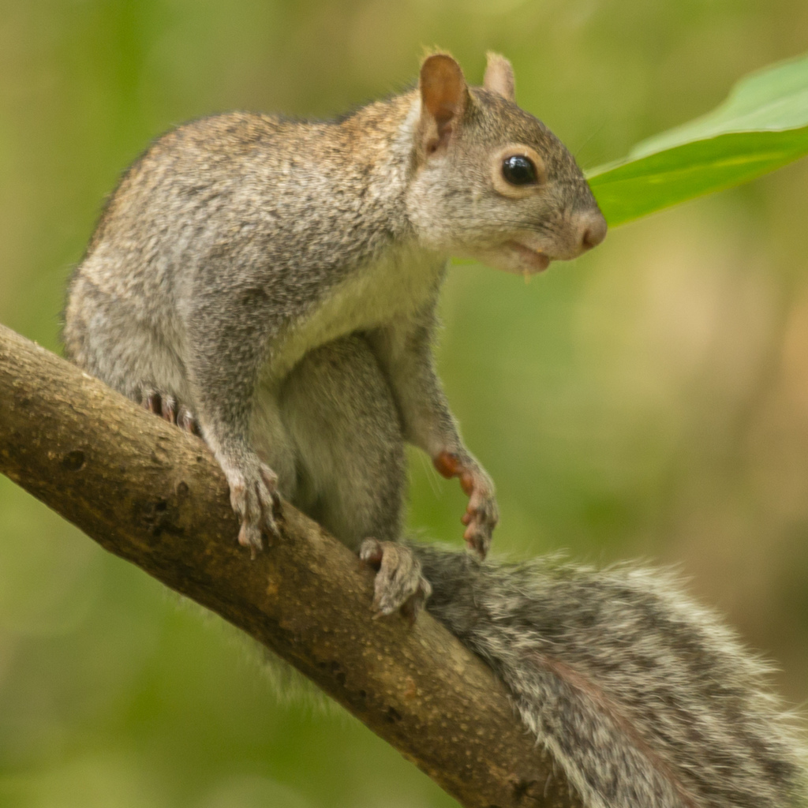
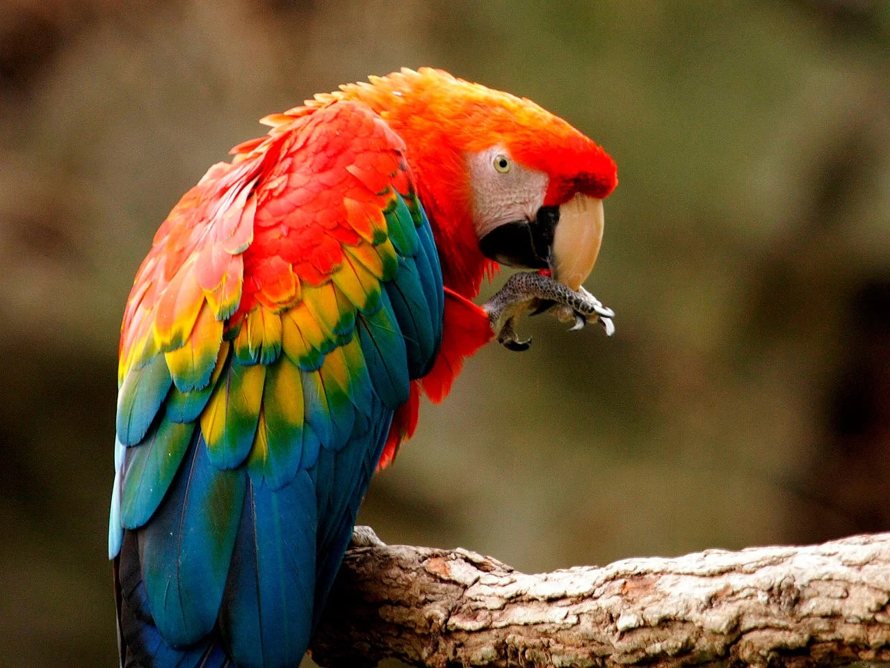
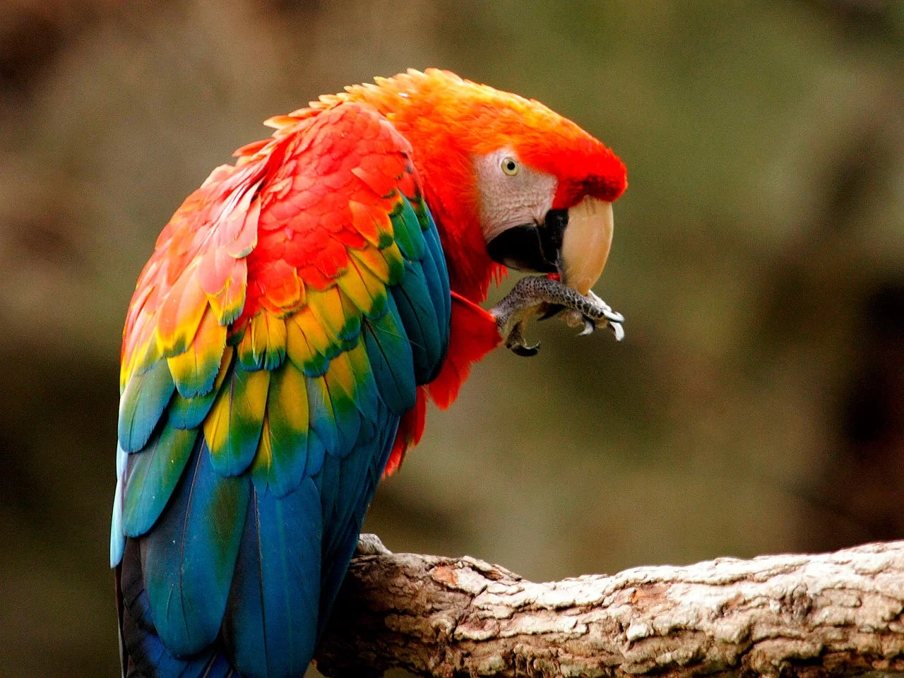

En Yucatan al igual que en todos los lugares son muchos los animales que estan en peligro de extincion que en todos los lugares en sus playas ubicadas justos en el golfo de Mexico, yucatan es unos de los estados mas famosos y conocidos de este bello pais pero al igual tiene muchos animales en peligro de extincion y algunos de ellos son los siguientes animales boa, flamenco rosa, jaguar, cocodrilo de pantano, hocofaisan, puma, tortuga de carey, matraca, guacamaya, lobo de tasmania, paloma pasajera, rinoceronte blanco delfin de rio son algunos de los animales en peligro de extincion aunque no son todos los animales alguno de ellos si los conocemos pero algunos de ellos no los conocemos pero aun asi nosotros debemos cuidarlos no matandolos o cazandolos por que ellos son igual que nosotros que queremos sobrevivir aun en este munod por eso nuestro deber es proteger cada unos de los animales y no solo por que estan en peligro de extincion, nuestro deber y nuestra responsabilidad es cuidar a los que no estan en extincion para que ellos igual sobrevivan y no logren estar en la lista de los animales en peligro de extincion
 
